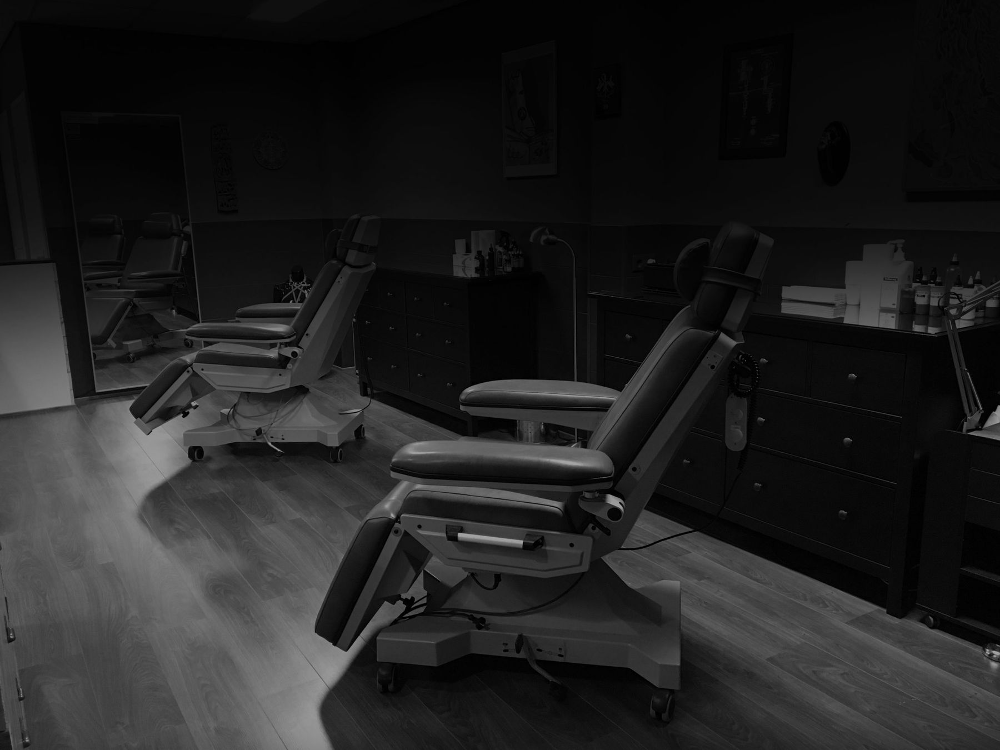
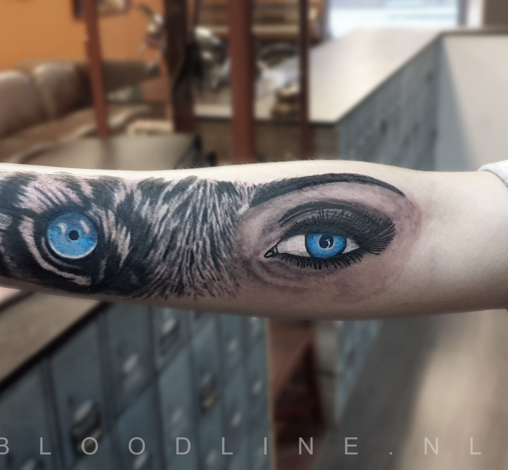
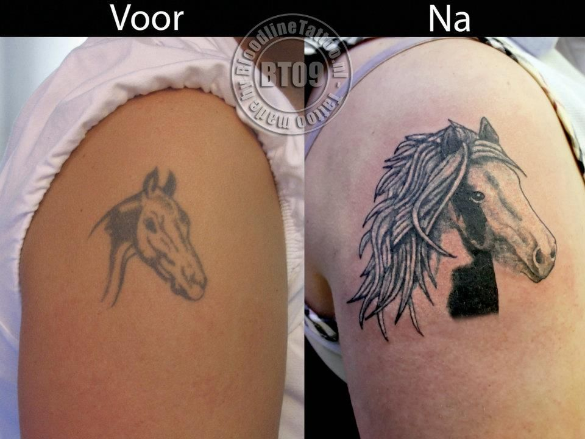
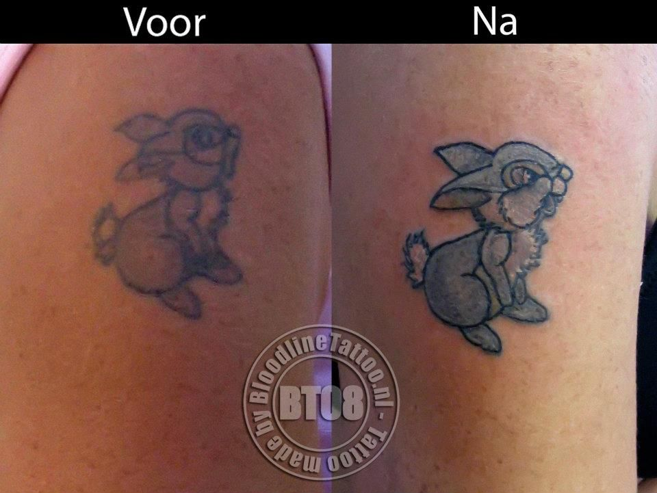
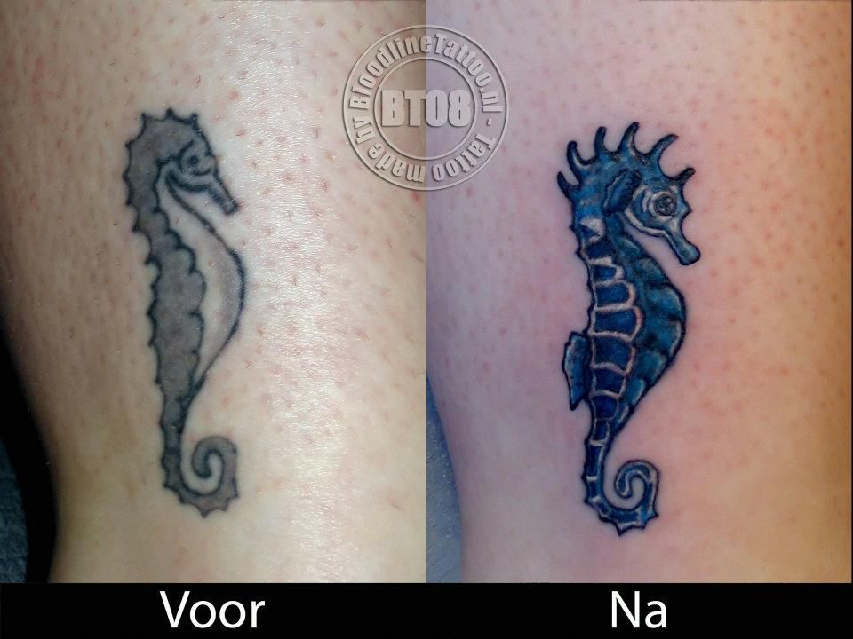
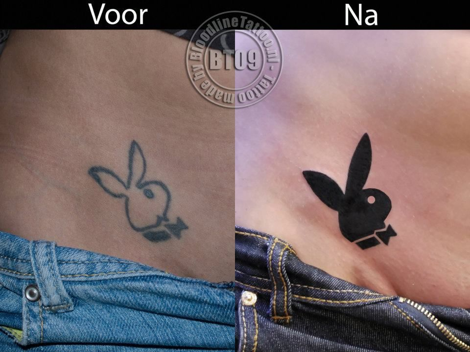
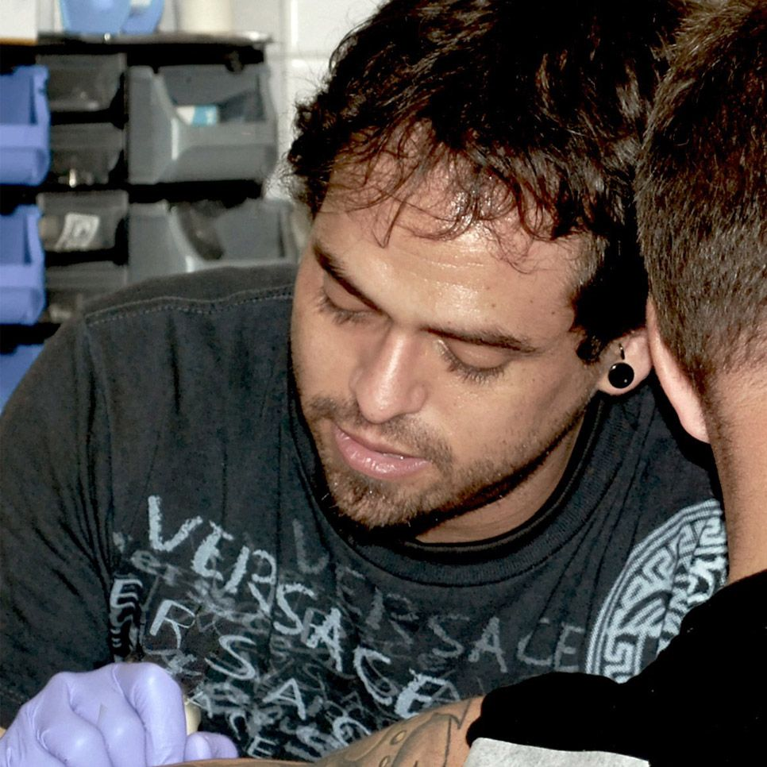
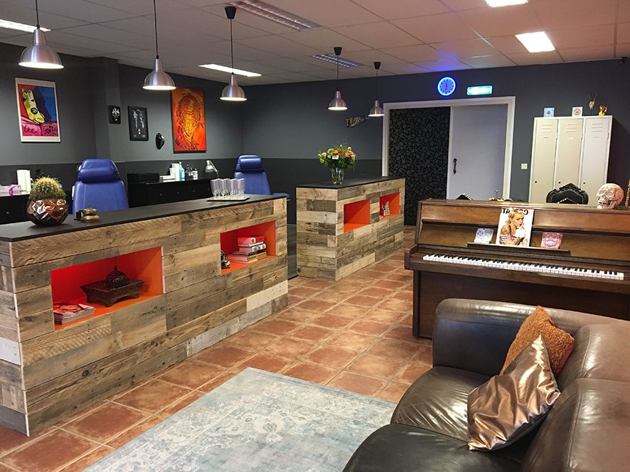

Een tattoo die echt van jou is
Tattoos en piercings in Roosendaal. We denken met je mee tot een eigen ontwerp dat gegarandeerd uniek is, al sinds 2003 en met veel aandacht voor detail en hygiëne.
Uit ons portfolio
Van realistische portretten en dieren tot fijne lijntjes en kleur. Elk ontwerp maken we samen met jou.
Zo werkt het
Onze werkmethode zorgt ervoor dat je nieuwe tattoo ook echt jouw tattoo wordt.
Neem contact op
Bel, stuur een WhatsApp of vul het formulier in en vertel wat je in gedachten hebt. Dan plannen we een consult.
Samen het ontwerp maken
We denken met je mee tot een eigen ontwerp dat gegarandeerd uniek is.
Zetten en nazorg
Met aandacht voor detail en hygiëne. Je krijgt uitleg over de nazorg en bij vragen kun je ons altijd bellen of langskomen.
Oude tattoo opknappen of bedekken
Is een tattoo vervaagd, of vind je hem niet mooi meer? Dan maken we hem weer strak of zetten we er een nieuw ontwerp overheen.




Piercings
Piercen is bij ons een volwaardig vak en niet iets wat er even bij gedaan wordt. We hebben de juiste medische kennis in huis om elke piercing correct te plaatsen.
We piercen uitsluitend met titanium sieraden. Je kiest zelf je sieraad: een ringetje, staafje of banaantje, met of zonder steentje, voor dezelfde prijs.
- Alleen titanium sieraden
- Sieraad zelf uitkiezen
- Dinsdag t/m zaterdag
- Altijd op afspraak
Oor
Gezicht en lichaam
Prijzen inclusief titanium sieraad naar keuze.


Over Bloodline Tattoo
"Durf te stralen, durf te zijn wie je bent."
Bloodline Tattoo is de studio van Bram, tattoo artist en eigenaar. Met ruim twintig jaar ervaring zorgt hij ervoor dat je met iets moois naar buiten loopt. Hij denkt graag met je mee, zodat je samen tot een ontwerp komt dat helemaal van jou is.
Je vindt ons aan de Kade in Roosendaal, op loopafstand van het station.
Afspraak maken
Vertel wat je in gedachten hebt, dan nemen we contact met je op voor een consult of een afspraak.
Liever even bellen?
Bellen of WhatsAppen kan op hetzelfde nummer.
Openingstijden
Met de trein? Vanaf station Roosendaal loop je zo naar de studio. Met de auto: er is voldoende (betaald) parkeren in de directe omgeving.